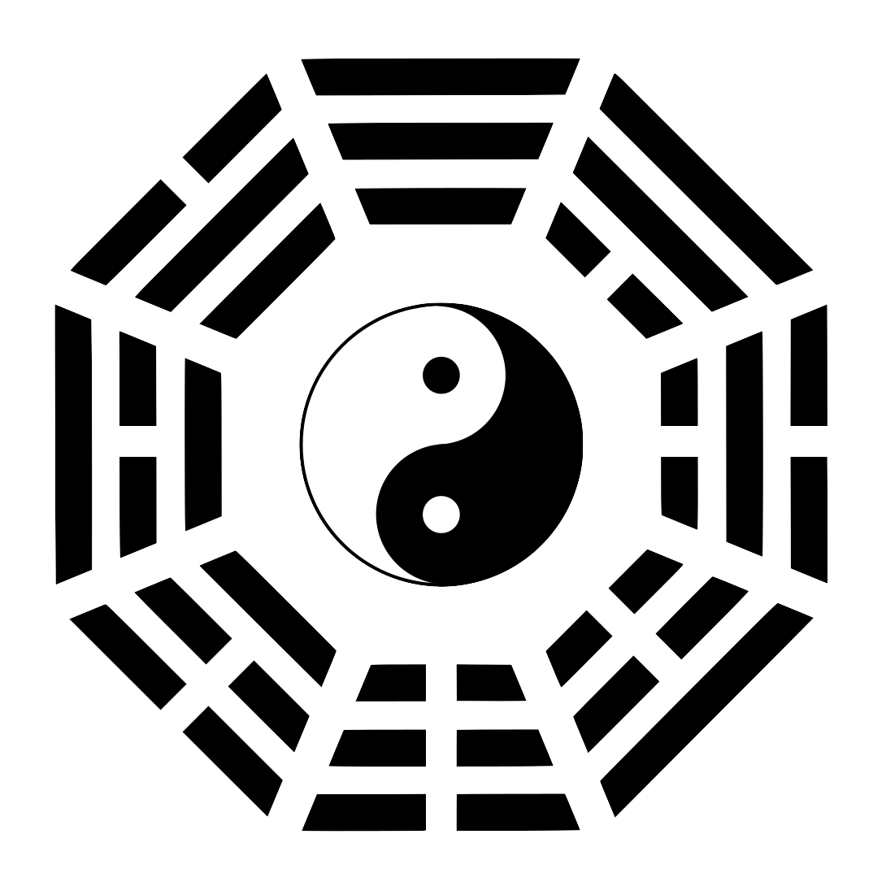

Yinyang and Dao
Yinyang (陰陽，阴阳) and dao (tao, 道) are two of the most important concepts in the Chinese culture and philosophy. They constitute the fundamental conceptual framework that shapes the Chinese worldview.
Taiji and Yinyang
To understand these two concepts, we need to start with another important concept taiji (taichi, 太極，太极). Yi Jing (I Ching, 《易經》，《易经》), the Book of Changes, is an ancient Chinese scripture that focuses on the study of changes. In Yi Jing Xici it is stated that “taiji yields, or gives rise to, two yi (儀，仪); two yi yield four xiang (象); four xiang yield eight gua (卦).” 1
Taiji is the primordial reality in which no differentiation has occurred. We can visualize it as an endless, undifferentiated space or void. As such, it is both something and nothing. It is something because it is that which is. It is nothing because before differentiation it cannot be said that there is this and there is that. 2 It is the unity and oneness of reality. It is that from which everything becomes what it is.
Yin and yang originate from taiji. “Taiji yields two yi.” These two yi are yin and yang. When differentiation starts, contrasts will emerge as yin and yang. Yin and yang form a binary pair. Yin means “that which is not yang” and yang means “that which is not yin.” As soon as there is yin, there is yang. There cannot be yin without yang, and yang without yin. To illustrate this, we can construe yin and yang as this and that. This is “that which is not that”, and that is “that which is not this.” When there is this, that which is not this would be that. There is no this without that, and no that without this.
As a binary, yin is symbolized using the sign “⚋” and yang with “⚊”. (They can be symbolized with the Hindu-Arabic numerals as 0 and 1. 0 is non-1 and 1 is non-0.) The symbols can then be used to represent the contrasts that we recognize as different characteristics or states of reality. After the first differentiation, reality would be divided into two parts or two states: one of them yin ⚋ (0) and the other yang ⚊ (1). If each of the two are further differentiated, then there would be four parts or four states (four xiang): yin-yin ⚏ (00), yin-yang ⚍ (01) yang-yin ⚎ (10) and yang-yang ⚌ (11). If each of these four differentiates one more time, there would be eight (eight qua): ☷ (000), ☳ (001), ☵ (010), ☱ (011), ☶ (100), ☲ (101), ☴ (110), and ☰ (111). Here we have the eight trigrams. With three additional differentiations, we would have sixty-four hexagrams such as ䷊ and ䷌. This process can continue indefinitely.
 Figure 1 The Yinyang-bagua Diagram With this schema, the Chinese people categorize the contrasts in the cosmos as yin and yang. Some common examples of yinyang pairs are day/night, sun/moon, hot/cold, summer/winter, fire/water, and male/female. It cannot be stressed enough that the designation of yin or yang in no way implies that one is better than the other. It would be silly to maintain that day is better than night or fire is superior to water. Yin and yang are just a binary pair used to represent the contrasts that show different characteristics in the world. Alas, over time, a tendency toward favoring yang over yin germinated and sprouted out in the Chinese culture, resulting in unfounded prejudices that foster discrimination. The prejudice against women has caused much suffering in the history of China. 3
Without Yinyang, No Changes
The very concept of change presupposes the existence of differences. To say that a change occurs means that a shift from this to that, or from that to this, takes place. If this stays as this, then there would be no change. Moreover, there cannot be a binary of this and that without a differentiation. The essential meaning of yinyang is differentiation and contrast. So we can sum up the important point so far this way: without yinyang, there would be no changes. Once there is a contrast of yin and yang, changes become possible. We can now see why yinyang is such a key concept in the Book of Changes, Yi Jing. After the first differentiation, reality is distinguished into yin (⚋, 0) and yang (⚊, 1). A shift from yin to yang, or from yang to yin, would be a change. Given more differentiations, there would be more states. A change would in general be a shift from a given state to a different state. For instance, four seasons can be designated as follows: spring (⚍, 01), summer (⚌, 11), autumn (⚎, 10) and winter (⚏, 00). The change of season from spring to summer can then be represented as a change from yin-yang (⚍, 01) to yang-yang (⚌, 11). Such a change is characterized as the waxing, or strengthening, of yang and the corresponding waning, or weakening, of yin. Since yang is also associated with warmth, the rise of yang fits well with the observation that it gets warmer from spring to summer. This approach can be generalized to characterize all changes as the rise and fall of yin and yang.
Yinyang and Harmony
The Chinese worldview shaped by Yi Jing sees reality as dynamic and not static. Changes are accepted as the way reality is and understood as the interplay between yin and yang. As a binary, yin and yang coexist and must accompany each other. Without yin, there is no yang, and without yang, there is no yin. When yang is getting stronger, there would be a corresponding weakening of yin, and vice versa. To use the change of day and night as an example, around midnight, yin is at its highest point and yang its lowest. Henceforward, yang would be rising and yin falling. At dawn, yin and yang are at an equilibrium. Yang would continue to strengthen and reach its peak around noon, but then start to weaken. At dusk, the two would reach another equilibrium. This waxing and waning of yin and yang throughout twenty four hours of the day is regarded as an example of a dynamic balance of yin and yang.
Now imagine that for some unknown causes and conditions, daylight persists for twenty four hours. There is no dusk, night and dawn, and the whole day is just like noon. The change of day and night is disrupted. Using the language of Yi Jing, we would describe this bizarre phenomenon as yang staying at its fullest strength for twenty-four hours. 4 Such a disruption is regarded as a disharmony, a breakdown of the dynamic balance between yin and yang.
Likewise, floods and droughts are examples of disharmony. In contrast, the normal change of day and night and the change of seasons are taken to be examples of harmony, viewed as the dynamic balance of yin and yang. The focus of Yi Jing and the Chinese worldview is to study and understand how changes occur and evolve so as to maintain harmony and avoid disharmony. This is why dao is another important concept in the Chinese worldview.
Dao (Tao)
Figure 2 The Chinese Character Dao In a weekday when we go from home to school or work, a change of location takes place. To go from one place to another you would have to follow a road, and the route you take is how the change from being home to being at school or work takes place. 5 The Chinese character “dao” literally means “the road” or “the path.” The term “dao” is then generalized to mean the way of changes. Since changes are characterized and interpreted in terms of the interplay between yin and yang, dao is thus the principle that formulates the waxing and waning of yin and yang. The focus of the Chinese worldview is to achieve and maintain harmony. This is why studying dao becomes the central intellectual pursuit in the Chinese culture. The goal is to learn dao so that changes can be understood, managed, and guided to achieve and sustain harmony not only in human society but also between humans and nature.
Regrettably this fundamental meaning of dao got obscured over time in the history of China. Many schools of thoughts advocated various interpretations that mystify dao and dress dao in baffling cloaks. Some even turn dao into a supernatural force that influences or controls nature and people’s lives. The prevalence of divination and fortune-telling in the Chinese culture is rather unfortunate. It is a symptom resulting from a lack of in-depth understanding of yinyang and dao. The teaching of Yi Jing, instead of being properly studied and understood to promote harmony, has been turned into systems of fortune-telling for personal gains and ascendancy. 6 If a fortune-teller foretells that there is no divorce in your future, does it mean that your marriage is guaranteed to last no matter what you do from now on? What if then you, wrongheadedly thinking your marriage is secured, mistreat your significant other and have affairs with others? Is your marriage still going to last? Even if it does, will it be a happy marriage? Seeking assurance from a fortune-teller is simply wishful thinking. The right way to a good marriage is to learn the dao of marriage and work on the relationship everyday to forge the bond.
The Characteristics of the Chinese Worldview
Grounded on the framework of yin and yang, the Chinese worldview seeks to achieve and maintain harmony by means of knowing dao. As a result, it has five characteristics that make it stand out as a major worldview.
The Emphasis on Harmony
First of all, the main concern of the Chinese worldview is harmony. Harmony is regarded as good while disharmony, bad. Notice that the contrast is between good and bad, not good and evil. This distinction is important. Even though disharmony is viewed as bad, it is understood and accepted as something that will occur from time to time. So the goal is to minimize or shorten disharmony, not to eliminate it. This is different from other worldviews that center on good and evil, and seek to eliminate evil. Moreover, since disharmony is understood as the dynamic imbalance between yin and yang, it is not deemed as evil. In contrast to many western traditions, the Chinese worldview does not postulate some supernatural beings or higher power to represent good or evil. 7
The Progressive Outlook
Second, changes in reality and in life are accepted as inevitable, and not regarded as bad or undesirable. Reality is perceived as dynamic, and not static. It would be misguided and futile to try to stop changes. Instead of keeping the status quo, one should study dao and find ways to guide changes to achieve harmony. This provides a philosophical footing for the progressive outlook.
The Middle Way
Third, virtues and vices are understood in terms of the dynamic balance or imbalance between yin and yang. 8 The dominance of one over the other for a prolonged period of time, or on too many occasions, would be regarded as bad. For instance, a person would be impetuous if she rushes to act most of the time. On the other hand, it is also less than ideal if a person is overly cautious and indecisive. A person with the trait of being prudent, but capable of acting quickly when necessary would be praised as virtuous.
Cooperation Over Competition
The fourth characteristic of the Chinese worldview is to promote cooperation and shun conflict and competition. It embraces the way of ren and harmony (rendao, 仁道) and rejects the way of domination and bullying (badao, 霸道). Applied to gender equality, this means that the talk of the war between men and women would be found distasteful in the Chinese worldview. The long-term domination of men over women, or women over men, would be bad. Instead, the harmony in a household is to be achieved by the mutual respect and cooperation between the couple.
The Focus on the Present Life
The last distinctive feature of the Chinese worldview is its focus on living a good life in the present life. The concern is not on the afterlife such as Heaven or rebirth. It does not assume the existence of an afterlife 9 and regard the present life as somehow secondary to the next life. Rather, it accepts that this life is finite and encourages the outlook of living the present life to the fullest.
These five characteristics set the Chinese worldview apart from others. They result from the conceptual framework of yinyang and dao, laid down and set forth in Yi Jing. Many schools of thoughts in the Chinese tradition aim to know dao so as to comprehend changes and promote harmony. They differ mainly on how dao can be known and how harmony can be achieved and sustained. The two most prominent schools, Confucianism (rujia, 儒家) and Daoism (daojia, 道家), share these outlooks and ideals, but advocate different ways of learning dao and achieving harmony. The proper understanding of yinyang and dao gives us a head start in studying their teachings.
-
「易有太極，是生兩儀，兩儀生四象，四象生八卦。」 〈易經繫辭上傳第十一章〉(Yi Jing Xici, Volume 1, Chapter 11).↩︎
-
The prerequisite of designating something as this and something else as that is a differentiation that distinguishes this from that.↩︎
-
If yin and yang are supposed to be equal, then what accounts for China being a male-dominant society? The causes lie more on China being an agrarian country for thousands of years and its needs to defend itself against nomadic tribes than on philosophical or religious grounds. It is telling that the Chinese character for man or the male, nan (男), is composed of two Chinese characters: tian (田) and li (力). Together, these two characters literally means “manpower or labor in the crop field.”↩︎
-
It would be a mistake to say that the cause of such a disruption is yang remaining at full strength for twenty four hours. I suspect that such a mistake contributes to the superstitious view that yin and yang are mysterious forces that drive changes in reality.↩︎
-
There may be more than one path to go from one place to another. Route A may be the fastest while Route B the most scenic. If one prefers sightseeing to saving time, then it would be more suitable to take Route B than route A. To generalize, there can be more than one way to change, and which dao is the best is relative to one’s concerns and cares. Overall, the Chinese worldview favors dao that promotes and sustains harmony.↩︎
-
Although it is misguided to use Yi Jing for fortune-telling, its development and the study of changes were initially influenced by divination.↩︎
-
The contrast and the mutual dependency between yin and yang are sometimes mistakenly used as a response to the problem of evil: Evil exists and cannot be eliminated because just like yin cannot exist alone without yang, good cannot exist without evil. However, such a contention is a misapplication of yinyang. It would be an error to say that good is yin and evil is yang, or good is yang and evil is yin. More seriously, such a response would not sit well with certain Christian theologies, for if good cannot exist without evil, does this mean that God cannot exist without the Devil?↩︎
-
This framework of yinyang balance is also adopted in many other domains such as health and medicine. In Chinese medicine, an illness is often characterized as an imbalance between yin and yang. Again, it is worth reiterating that it would be a mistake to say that the illness is caused by an imbalance between yin and yang.↩︎
-
After Buddhism was introduced into China, the belief in rebirth, often taken literally as the transmigration of the soul, did become popular.↩︎
This work is licensed under CC BY-NC-ND 4.0